From Commit to Container
Hi. Writing code is only half of shipping software. Someone has to build it, test it, put it on a server and keep it running, and for a long time that was a different team who found out about your change last. DevOps is how those two halves became one process. This page follows a single change from your editor to a running container, and stops at every tool and command along the way.
Pictures come from your slides, and each caption says which week and slide, so you can flip back to it. Tap any picture to see it larger. The code is the code from Lab 1 and the Week 4 deck. The demos run in your browser, so nothing here touches a real server. There's no Week 3 deck in the folder, so the page goes from testing straight to containers.
- Chapter 1 says what DevOps is, where it came from, and the eight stages every change goes through. (Week 1)
- Chapter 2 shows how a Git push starts the automation, and what CI and CD each automate. (Week 1)
- Chapter 3 covers testing: the kinds, the levels, linting and coverage. (Week 2)
- Chapter 4 walks through Lab 1 line by line and runs its pipeline. (Lab 1)
- Chapter 5 goes from physical servers to virtual machines to containers. (Week 4)
- Chapter 6 gets hands-on with Docker. (Week 4)
What Is DevOps?
1.1 The definition
DevOps is the practice of operations and development engineers working together through the whole life of a service, from design and development to running it in production.
The name is the two job titles joined. Dev writes the features. Ops runs the servers. Before DevOps they usually sat in separate teams with opposite goals: developers were rewarded for shipping changes, and operations was rewarded for keeping things stable, and every change is a risk to stability. So releases were rare, large and stressful.
The slide's point is that DevOps is more than tools. You can install Jenkins and Docker and still have two teams throwing work over a wall. It's a way of working where the same people care about the code and about how it runs.
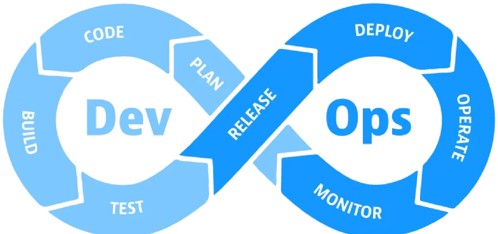
1.2 Where it came from
Waterfall ran each phase once, in order: requirements, design, implementation, testing, then deployment. You found out whether it worked at the very end. Agile cut the work into short sprints so the software is built and checked in small pieces. Agile fixed the development side, but deployment was still slow and manual. DevOps extends the same idea, small and frequent, all the way to production.
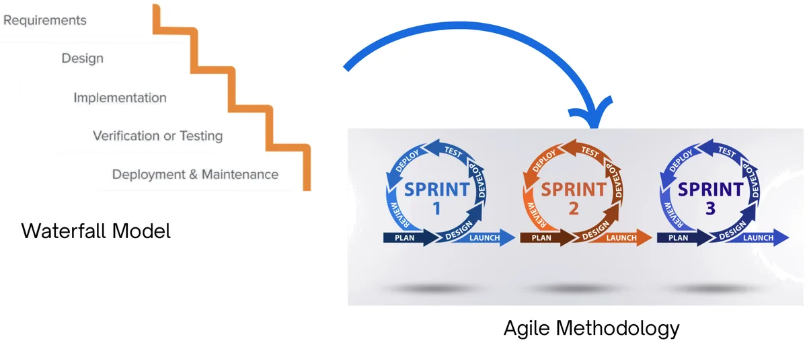
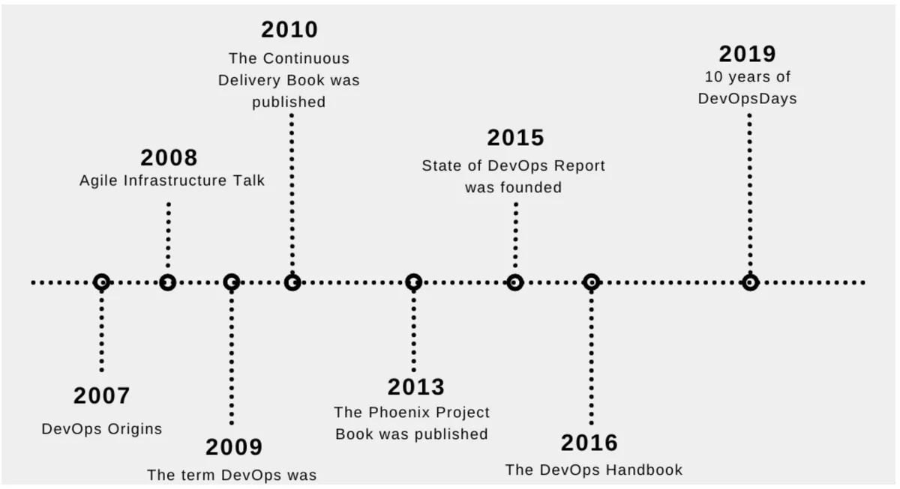
The 2009 point on that timeline is a conference talk. At Velocity 2009, John Allspaw and Paul Hammond from Flickr presented "10+ Deploys per Day: Dev and Ops Cooperation at Flickr", at a time when many companies released a few times a year. Patrick Debois, who had been pushing the same idea in Belgium, then organised the first DevOpsDays in Ghent that autumn, and the name stuck.
What do teams actually get from it? The slide lists four things: better collaboration, more efficiency, faster time to market, and higher quality and security. The last one surprises people, because shipping more often sounds riskier. It isn't, because each release is small and goes through the same automated checks.
1.3 The Three Ways
Gene Kim, author of The Phoenix Project and The DevOps Handbook, sums the principles up as three "ways".
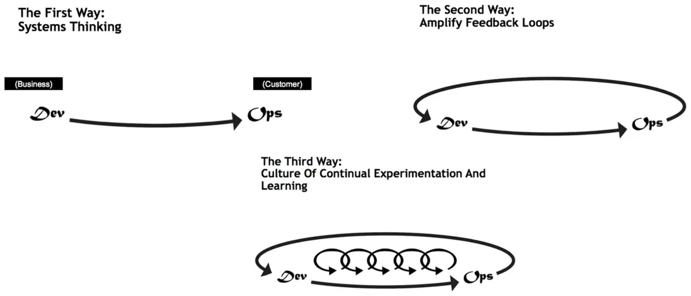
| Way | What it means | In practice |
|---|---|---|
| 1. Flow / systems thinking | Optimise the whole path from idea to production, not one team's part of it. | Small batches, remove bottlenecks such as a manual approval that takes a week. |
| 2. Amplify feedback loops | Problems should travel back to the people who caused them, quickly. | CI tells you in minutes that your commit broke a test. Monitoring alerts the team that shipped. |
| 3. Continual experimentation and learning | Make it safe to try things and to fail. | Blameless post-mortems, feature flags, trying a change on 1% of users first. |
1.4 The lifecycle
Every change goes round the loop in eight stages. Here's one real change, "add a /health endpoint", going all the way round. It's the change you make at the end of Lab 1.
Follow one change round the loop
1.5 Tools at each stage
| Stage | Goal | Tools on the slides |
|---|---|---|
| Plan | Everyone knows what to build | Jira, Trello, Asana, Azure DevOps |
| Code | Write and review code together | Git, GitHub, GitLab, Bitbucket |
| Build | Package the code into something runnable | Maven, Gradle, npm, Docker |
| Test | Catch bugs before users do | Selenium, JUnit, TestNG, Postman, Cypress |
| Release | Version, tag and approve | Jenkins, GitLab CI, Bamboo |
| Deploy | Put it on servers reliably | Docker, Kubernetes, Ansible, Terraform, AWS/GCP/Azure |
| Operate | Keep it available and scaled | Prometheus, Grafana, Nagios, ELK |
| Monitor | Notice problems, collect feedback | Prometheus, Grafana, ELK, New Relic, Datadog |
Don't memorise the whole wheel below. Learn one tool per stage well. The ones this course actually uses are Git, GitHub Actions and Docker.
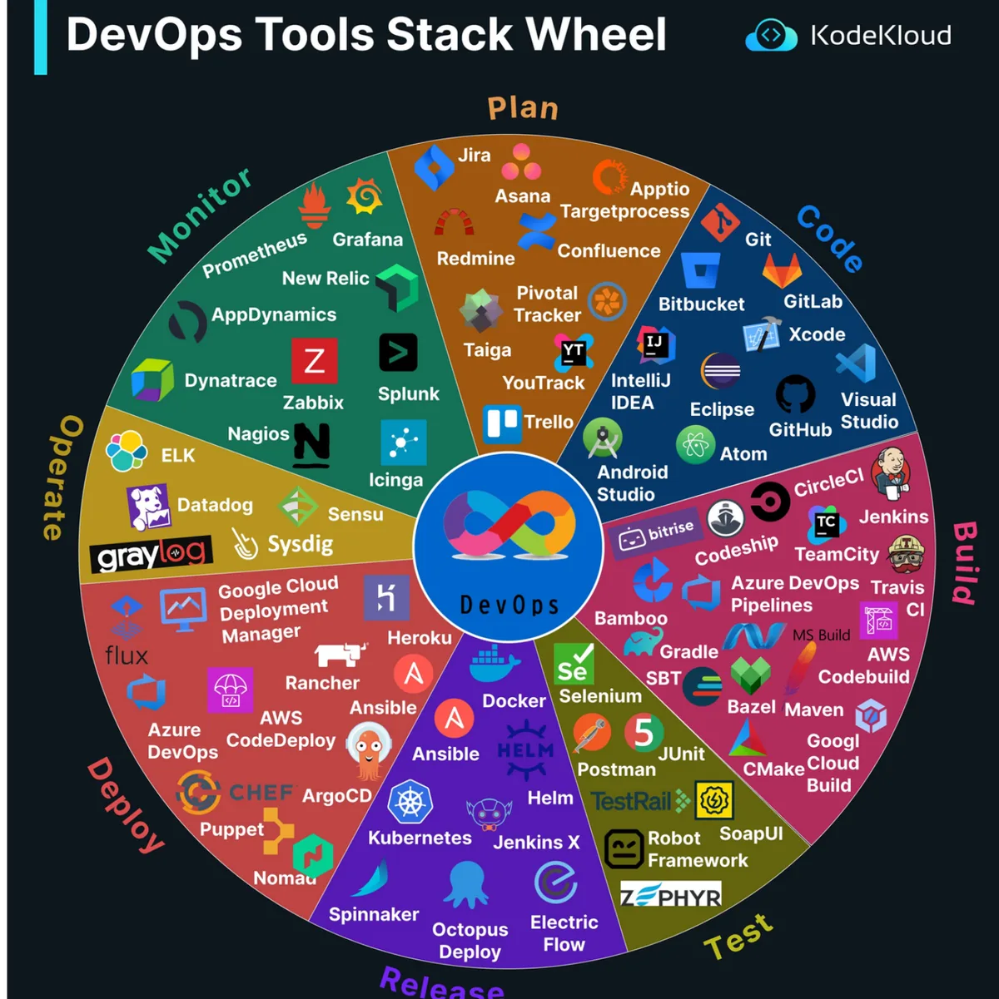
Chapter 1 recap
- DevOps: developers and operations own the whole life of the service together.
- It's a culture first. Tools support it.
- Waterfall: once, in order. Agile: short sprints. DevOps: small changes all the way to production.
- Three Ways: flow, feedback, experimentation.
- Lifecycle: plan, code, build, test, release, deploy, operate, monitor, and back to plan.
Check yourself: Chapter 1
Git and CI/CD
2.1 The DevOps engineer
The roadmap on the slide is the skill list for the job, in roughly the order you learn it: Linux and networking, then Git, CI/CD pipelines, containers and Kubernetes, infrastructure as code, cloud, then security, monitoring and reliability engineering. This course covers the middle of it: Git, CI/CD and containers.
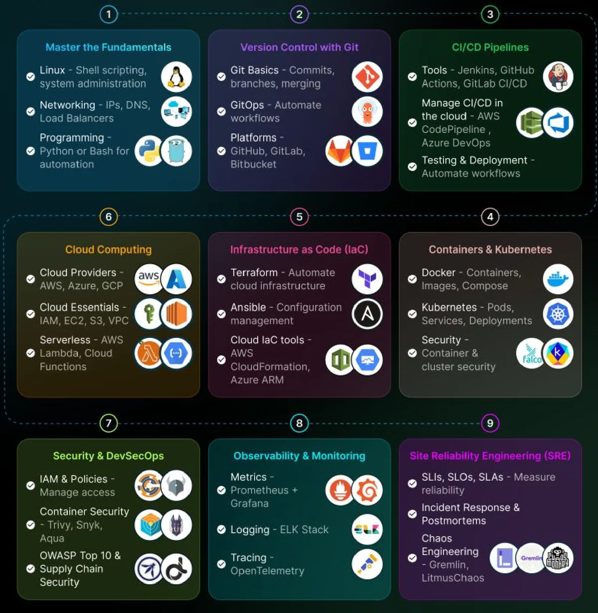
2.2 Git triggers everything
In DevOps, Git is the single source of truth. If it isn't committed, it doesn't exist: the code, the tests, the pipeline file and even the server configuration all live in the repository. That matters because Git events are what start the automation.
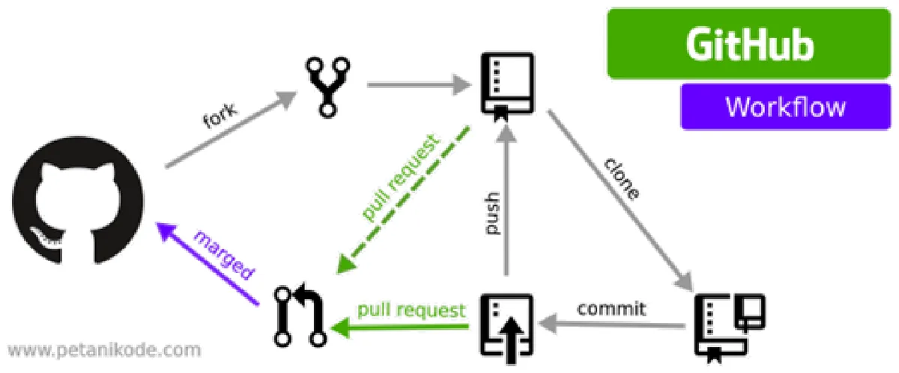
The four events on the slide are push, pull_request, merge and tag. A workflow file chooses which ones it listens to with its on: block. This is the one from Lab 1:
on:
push:
branches: [main]
pull_request:
branches: [main]
Does this event start the workflow?
GitHub has no separate merge event. Merging a pull request into main creates a commit on main, so it arrives as a push to main. That's why Lab 1's workflow runs twice for one feature: once on the pull request, and once after you merge it.
2.3 The pull request workflow
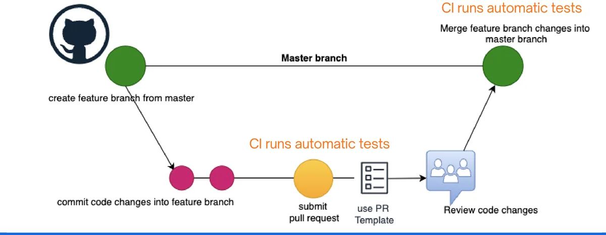
- Create a feature branch from
main:git checkout -b feature/health-route. - Commit your changes on that branch and push it.
- Open a pull request (PR). CI runs the tests on it automatically.
- A teammate reviews the code. The PR can't merge while CI is red, if the repository is set up that way.
- Merge into
main. CI runs again on the merged code.
The point of the branch is that main always works. Nobody's half-finished code lands there, and nothing lands there untested.
2.4 Continuous integration
Continuous integration (CI) means merging everyone's changes into the shared repository often, and automatically building and testing each change, usually with unit and integration tests, to prove it hasn't broken the app.
"Integration" is the hard part it's named after. If five people each work alone for a month and then merge, you get a month of conflicts at once. If they merge every day, each merge is small, and when the build breaks you know it was today's change.
The slide's five steps to set it up:
- Write tests for the critical parts of your code.
- Get a CI service to run them on every push.
- Integrate your changes every day.
- Fix the build as soon as it breaks.
- Write tests for every new feature.
Step 4 is the cultural one. A red build that everyone ignores is worse than no CI at all, because people stop trusting the signal.
2.5 Continuous delivery vs continuous deployment
CD has two meanings, and the difference is one step.
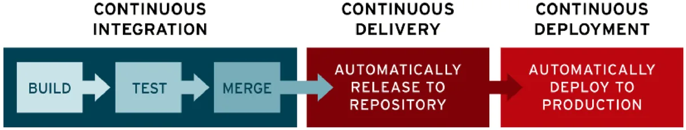
- Continuous delivery: every change that passes is automatically packaged and released to a repository, ready to deploy. A person presses the button to put it in production.
- Continuous deployment: no button. If it passes, it goes to production automatically.
Delivery or deployment?
Why would anyone keep the button? Some releases need a human decision: a marketing launch date, an app store review, a bank's change approval. Continuous deployment needs a lot of trust in your tests, because nothing stands between them and your users.
On 1 August 2012, Knight Capital, a US trading firm, deployed new code to its eight trading servers by hand. A technician missed one server. That server still had old, retired code on it, which the new release accidentally switched back on, and it sent millions of unintended orders. The firm lost over $400 million in about 45 minutes. An automated deploy does the same thing on every server every time, and that is the whole reason the Deploy stage is automated.
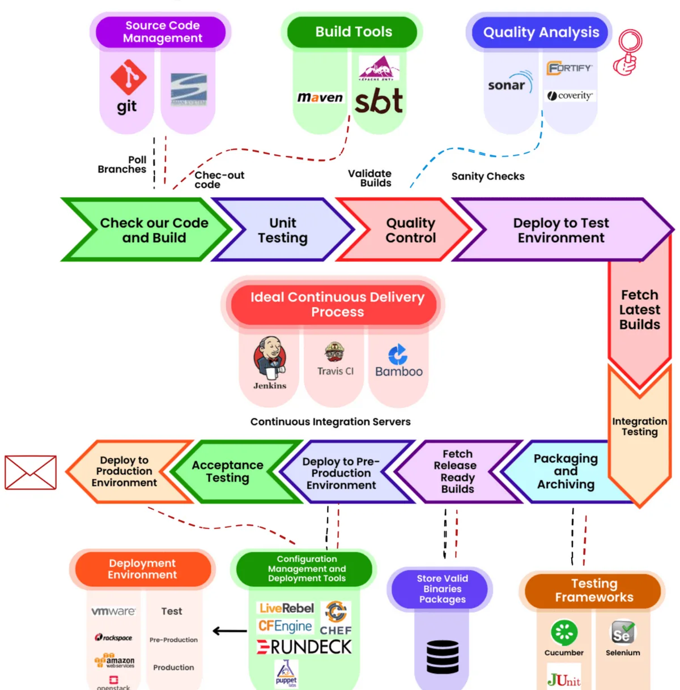
The benefits on the slide follow from automation: fewer bugs reach users, less manual work, faster and less risky releases, and quicker user feedback.
2.6 CI/CD vs DevOps
CI/CD is a part of DevOps. CI/CD covers getting code from a commit to a release: version control, integration, testing and deployment. DevOps covers the whole loop, including planning, running the service and monitoring it, plus the culture around all of it.
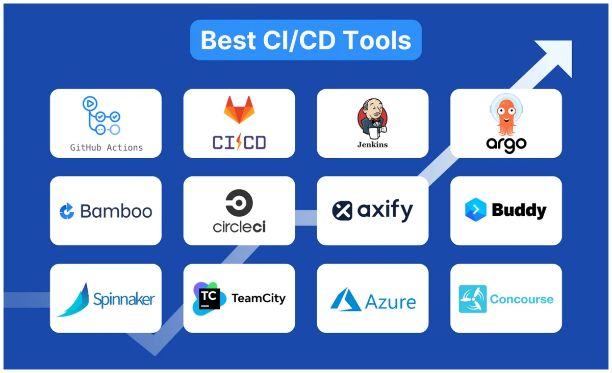
Chapter 2 recap
- Git is the source of truth, and Git events start the automation.
- Work on a branch, open a PR, let CI test it, review, merge.
- CI: integrate often, and build and test every change automatically.
- Continuous delivery stops at a release button. Continuous deployment goes straight to production.
- CI/CD is one part of DevOps.
Check yourself: Chapter 2
Testing in DevOps
3.1 Why test, and when
Software testing checks that software works correctly, securely and efficiently against its requirements.
The big change in DevOps is when testing happens. It used to be a phase at the end. Now it runs through the whole lifecycle, which is called continuous testing. Two phrases on the slides describe the direction:
- Shift left: test earlier, while you write the code. A bug found by a unit test on your laptop costs you a minute. The same bug found in production costs an incident.
- Shift right: keep checking after release, by monitoring real use in production.
The slide's example of a costly defect is Delta Air Lines in 2024: a faulty update crashed systems worldwide and cost Delta about $500 million.
That update wasn't Delta's own code. On 19 July 2024 the security company CrowdStrike pushed a faulty content update to its Falcon software, and Microsoft estimated that about 8.5 million Windows machines crashed and couldn't restart: airlines, banks and hospitals at once. Delta cancelled thousands of flights over several days. Part of the lesson is shift right: roll an update out to a small group first and watch it, instead of to every machine at the same moment.
3.2 Manual vs automated
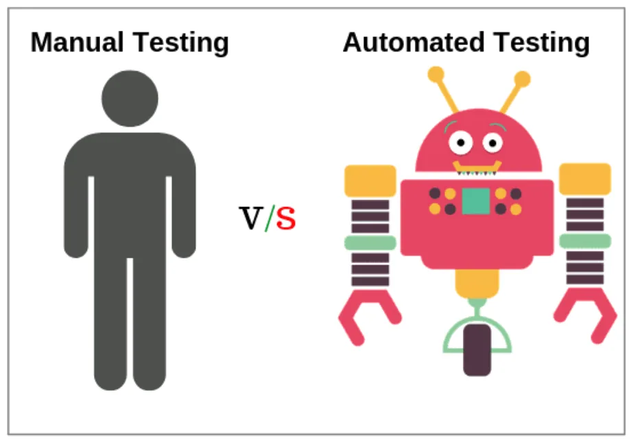
| Manual | Automated | |
|---|---|---|
| How | A person clicks through the app or calls the API | Scripts and tools run the tests |
| Cost | Expensive every single time | Costs effort to write once, then nearly free to rerun |
| Errors | Typos and skipped steps | Does the same thing every time |
| Good for | Exploring, usability, one-off checks | Anything you'll run again, which in CI is every commit |
3.3 TDD and BDD
Test-driven development (TDD) writes the test before the code, in a short loop: red (write a test, watch it fail), green (write just enough code to pass), refactor (tidy the code while the test keeps you safe).
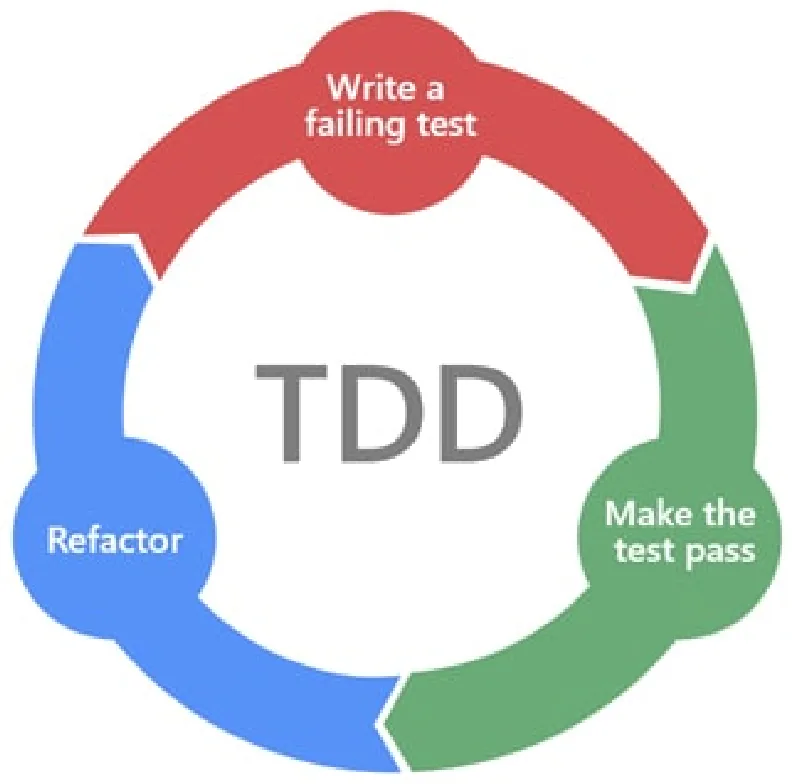
Try the loop. The tests below are already written, and the function is an empty stub, so every test starts red. Write the code until they're all green.
Red, green, refactor
Behaviour-driven development (BDD) writes the expected behaviour in plain language first, so non-programmers on the team can read and agree on it. It uses Given / When / Then:
Given the user has entered a valid username and password, When the user clicks the "Login" button, Then the system should display a "Login Successful" message.
Tools like Cucumber turn each of those lines into an automated step. So BDD is TDD where the test is written as a sentence.
3.4 Functional and non-functional testing
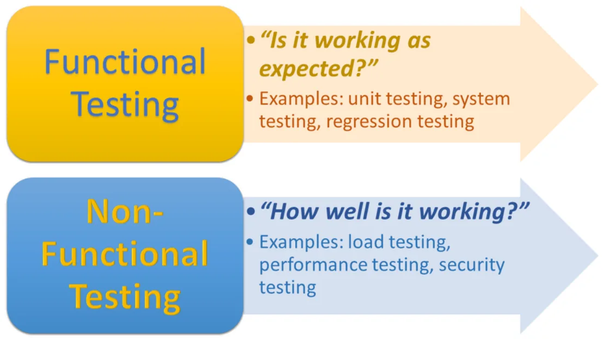
Functional: does it work?
- White-box: you can see the code.
- Black-box: you can't, only inputs and outputs.
- API: the interfaces between components.
- Regression: new changes didn't break old features.
- Smoke: the basics work, so the build is worth testing further.
- Sanity: one area works, when there's no time for a full run.
- Ad hoc / exploratory: try to break it without a script.
- UAT: real users confirm it meets their needs.
Non-functional: how well?
- Performance: speed under a given workload.
- Load: performance under realistic traffic.
- Stress: how much it takes before it fails.
- Recovery: does it come back cleanly after a crash?
- Security: can an attacker get in?
- Usability: can a user finish the task easily?
- Compatibility: other browsers, devices, operating systems.
The functional checks follow six steps: identify the functions, create input data, work out the expected outputs, run the test cases, compare actual with expected, and decide whether it passes.
3.5 The four levels
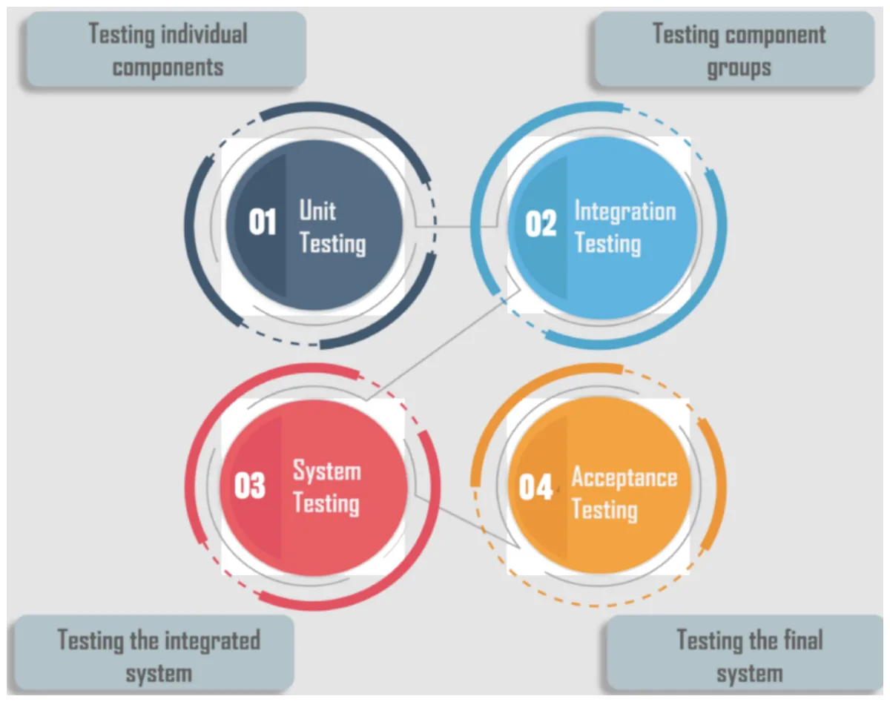
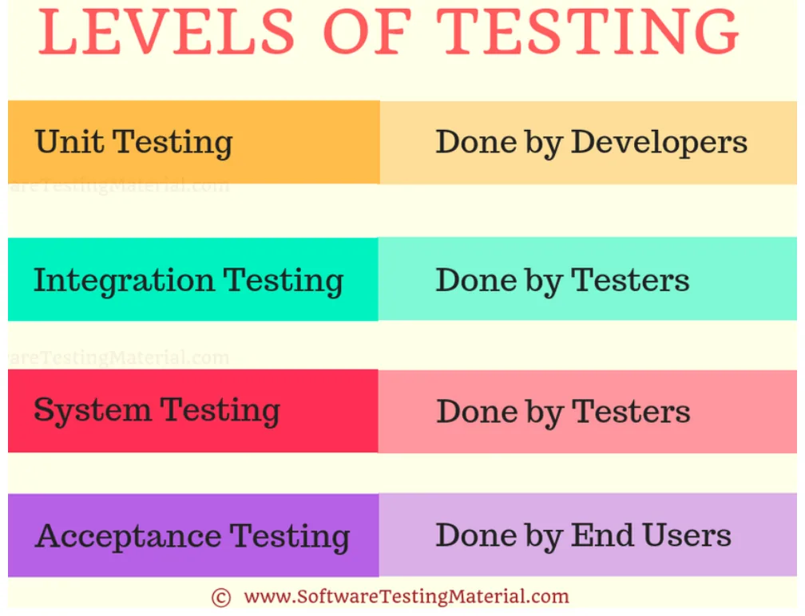
| Level | What it tests | Example | Speed and cost |
|---|---|---|---|
| Unit | One function, method or class, on its own | add(2, 3) returns 5 | Milliseconds. Run thousands. |
| Integration | Modules or services working together | The API really saves to the database | Slower: needs several parts running |
| System | The whole app, as a black box, like production | Sign up, log in, place an order | Slow |
| Acceptance | Does it meet the business need? Users or the client decide | The shop owner checks the checkout flow | Slowest, partly manual |
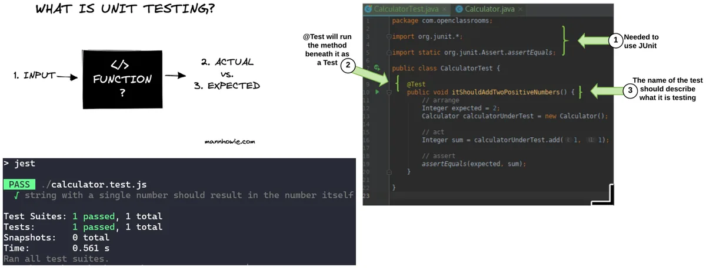
The five steps of unit testing on the slide: identify the unit, pick manual or a framework, set up the environment (test data, dependencies and mock objects that stand in for the real database), write the test cases, then debug and rerun. The frameworks listed: Jest and Mocha for JavaScript, JUnit for Java, NUnit for .NET, pytest for Python. Lab 1 uses Mocha.
Acceptance testing comes in several kinds: user (UAT), business (BAT), contract (CAT, against the agreed terms), regulation (RAT, such as health-data law), operational (OAT, is it ready to run), plus alpha testing in-house and beta testing by outside users before release.
Which kind of test is this?
3.6 Integration techniques
If you're testing how parts fit together, which parts do you put together first?
| Technique | Order | Missing parts are replaced by | Trade-off |
|---|---|---|---|
| Top-down | Main module first, then the modules below it | Stubs: fake lower modules that return canned answers | Can start early |
| Bottom-up | Low-level modules first, then upward | Drivers: fake higher modules that call the real low ones | The basics are proven first |
| Sandwich (mixed) | Both ends at once | Stubs and drivers | No forced order |
| Big bang | Everything together at one time | Nothing | Quick answer, but when it fails you can't tell which part broke |
A stub is a cardboard cut-out of a module: it stands where the real one will go and gives fixed replies. A driver is the opposite: a fake caller that pokes the real module to see what it does.
Tools on the slides: Postman for API tests, Katalon (built on Selenium), SoapUI, and Citrus for Java.
3.7 Linting
A linter reads your code without running it (static analysis) and flags mistakes and style problems: an unused variable, a misspelled name, == where you meant ===, inconsistent formatting. It runs in two places:
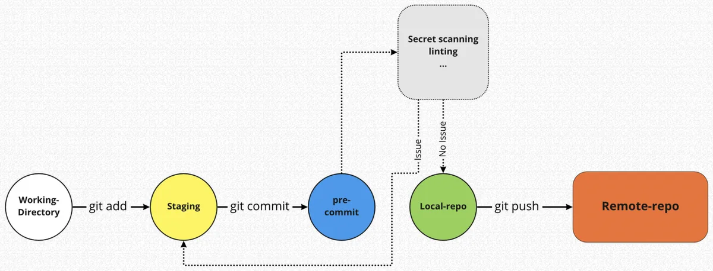
- Before committing, as a pre-commit hook, so bad code never reaches the repository.
- In the CI pipeline, so nobody can skip it. Lab 1 does this with
yarn lint.
// ESLint would flag both of these:
const unused = 42; // 'unused' is assigned a value but never used
if (user = admin) { … } // assignment where a comparison was meant
3.8 Code coverage
Code coverage measures how much of your code ran while the tests ran. Tools report it four or five ways:
- Function: % of functions called.
- Statement: % of statements executed.
- Branch: % of the paths through each
if/elsetaken. - Condition: % of boolean conditions seen both true and false.
- Line: % of lines executed.
Pick which tests to run and watch the numbers.
What did the tests touch?
Coverage only says the code ran. A test that calls shippingFee(80, false) and never checks the answer still counts. Lab 1 says the same: full coverage means the measured code was exercised, not that every behaviour was tested.
Chapter 3 recap
- Continuous testing: shift left to catch bugs early, shift right to watch production.
- Automate anything you'll run more than once.
- TDD: red, green, refactor. BDD: Given, When, Then.
- Functional asks "does it work?" Non-functional asks "how well?"
- Levels: unit, integration, system, acceptance.
- Stubs replace lower modules, drivers replace upper ones.
- Lint before commit and in CI. Coverage shows what ran, not what's correct.
Check yourself: Chapter 3
Lab 1: A CI Pipeline with GitHub Actions
4.1 What you build
A tiny Node.js web app whose only page says Hello, GitHub Actions!, plus a pipeline that lints, tests and measures coverage on every push and pull request. The app is deliberately boring. The pipeline is the point.
ci-cd-lab/ ├── .github/ │ └── workflows/ │ └── ci.yml ← the pipeline ├── test/ │ └── test.js ← the tests ├── .gitignore ├── .yarnrc.yml ├── app.js ← the Express app ├── eslint.config.js ← lint rules ├── package.json ← dependencies and scripts ├── README.md └── server.js ← starts the app
The stack: Node.js 24, Yarn 4, Express 5, Mocha and Chai for tests, Supertest to call the app over HTTP, ESLint for linting, and c8 for coverage.
4.2 The app and its test
The app is split over two files on purpose. app.js defines the app and exports it:
import express from 'express';
const app = express();
app.get('/', (req, res) => {
res.status(200).send('Hello, GitHub Actions!');
});
export default app;
server.js starts it on a port:
import app from './app.js';
const port = process.env.PORT ?? 3000;
app.listen(port, () => {
console.log(`Server listening on port ${port}`);
});
The test imports app.js and calls it directly with Supertest. No server has to be running, no port can clash, and the test runs the same way on your laptop and on GitHub's machine. If app.js called listen() itself, every test run would try to open port 3000.
import { expect } from 'chai';
import request from 'supertest';
import app from '../app.js';
describe('GET /', () => {
it('returns HTTP 200', async () => {
const response = await request(app).get('/');
expect(response.status).to.equal(200);
});
it('returns the expected greeting', async () => {
const response = await request(app).get('/');
expect(response.text).to.equal('Hello, GitHub Actions!');
});
});
describe and it come from Mocha, expect from Chai, and request(app) from Supertest. Both tests are unit-sized, but because they go through HTTP they're also a small integration test of Express and your route.
4.3 Lint, test, coverage
package.json names the commands, so everybody and CI run exactly the same thing:
"type": "module",
"packageManager": "yarn@4.18.1",
"scripts": {
"start": "node server.js",
"test": "mocha",
"lint": "eslint .",
"coverage": "c8 mocha"
}
"type": "module"turns onimport/export(ES modules)."packageManager"pins the Yarn version, so everyone installs the same way.c8 mocharuns the same tests while recording which lines ran, then prints the table and writes an HTML report tocoverage/.
yarn install # creates yarn.lock: commit it yarn start # open http://localhost:3000/ yarn lint yarn test # 2 passing yarn coverage
Step 9 · break it on purpose
Change the greeting in app.js and run yarn test. The first test still passes, because the status is still 200. The second fails and shows you both strings:
GET /
✔ returns HTTP 200
1) returns the expected greeting
1 passing (24ms)
1 failing
1) GET /
returns the expected greeting:
AssertionError: expected 'Hello, GitHub!' to equal 'Hello, GitHub Actions!'
Put the greeting back before you commit. The pipeline in 4.5 shows what would happen if you didn't.
4.4 The workflow file
.github/workflows/ci.yml is the pipeline. GitHub finds any YAML file in that folder and runs it on the events in on:.
name: CI
on:
push:
branches: [main]
pull_request:
branches: [main]
jobs:
quality:
runs-on: ubuntu-latest
steps:
- name: Check out repository
uses: actions/checkout@v4
- name: Set up Node.js
uses: actions/setup-node@v4
with:
node-version: 24
cache: yarn
- name: Install dependencies
run: yarn install --immutable
- name: Run ESLint
run: yarn lint
- name: Run tests
run: yarn test
- name: Generate code coverage
run: yarn coverage
- name: Upload coverage HTML report
if: always()
uses: actions/upload-artifact@v4
with:
name: code-coverage-report
path: coverage/
if-no-files-found: ignore
| Line | What it does |
|---|---|
runs-on: ubuntu-latest | GitHub starts a fresh Linux virtual machine for every run. Nothing from your laptop is on it. |
uses: | Runs a ready-made action. checkout copies your repository onto the machine. setup-node installs Node 24 and caches Yarn's downloads between runs. |
run: | Runs a shell command, the same one you'd type locally. |
--immutable | Fails if yarn.lock would have to change. CI installs exactly what you tested with, or nothing. |
if: always() | Steps normally stop after the first failure. This one runs anyway, so you still get whatever report exists. |
GitHub's Ubuntu machines come with the old Yarn 1. The lab's hint "keep the packageManager field and CI activation command aligned" refers to activating the newer Yarn with Corepack, but the workflow as printed has no such step. If your Install or Set up Node step fails with a message about packageManager or Corepack, add this step before "Set up Node.js":
- name: Enable Corepack
run: corepack enable
4.5 Run the pipeline
Pick what your commit did, then run it. Each step's log is shortened but follows what GitHub prints.
Push a commit to main
When a step fails, open its log on GitHub, fix the problem locally, run yarn lint, yarn test and yarn coverage yourself, then commit and push again. The run after a fix is just another push.
4.6 CI on a pull request
Step 14 proves the pull request half of on:. Make a branch, add a /health route and its test, and open a PR:
git checkout -b feature/health-route # edit app.js and test/test.js yarn lint && yarn test && yarn coverage git add app.js test/test.js git commit -m "Add health endpoint and test" git push -u origin feature/health-route
One way to write it, so that the new test really checks the response:
// app.js
app.get('/health', (req, res) => {
res.status(200).json({ status: 'ok' });
});
// test/test.js
describe('GET /health', () => {
it('reports ok', async () => {
const response = await request(app).get('/health');
expect(response.status).to.equal(200);
expect(response.body).to.deep.equal({ status: 'ok' });
});
});
Open the pull request on GitHub. The CI checks appear on it, and merging it triggers one more run on main.
Never commit credentials or secrets, even in a lab. A repository can be public, and Git keeps everything in its history even after you delete the file. Use GitHub's encrypted Secrets settings for anything a workflow needs.
Chapter 4 recap
- Split defining the app from starting it, so tests can import it.
- Scripts in
package.jsonmake local and CI runs identical. ci.yml: when to run (on), where (runs-on), what (steps).--immutableinstalls exactly the locked versions. Commityarn.lock.- A failed step stops the job, except steps marked
if: always().
Check yourself: Chapter 4
Virtualization and Containers
5.1 Bare metal
A bare-metal server is a physical computer with the operating system installed straight onto the hardware. Nothing sits in between. Each server usually did one job: one for the database, one for the website, one for email.
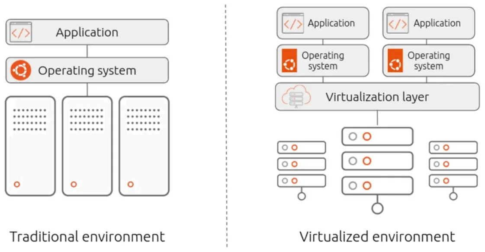
One server, one job. Easy to reason about, and the app gets the hardware's full performance.
Every new system needs a new machine, with its space and power. Most servers sat mostly idle.
5.2 Virtual machines
Virtualization adds a layer, the hypervisor, between the hardware and the operating systems. It splits one physical machine into several isolated virtual machines (VMs), each with its own full operating system, and hands out the CPU, memory and storage between them. The technology dates from the 1960s, took off in the 2000s, and is what cloud computing is built on: an EC2 instance is a VM.
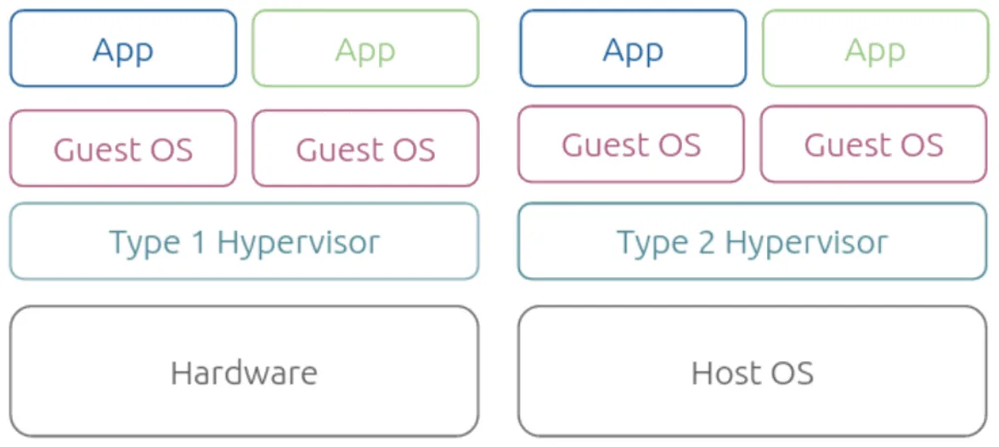
| Type 1 (bare-metal) | Type 2 (hosted) | |
|---|---|---|
| Runs on | The hardware directly | A normal OS like Windows or macOS |
| Overhead | Smaller, more efficient | Larger |
| Setup | Harder | Install it like an app |
| Examples | VMware ESXi, Microsoft Hyper-V, Citrix XenServer | VMware Workstation, Oracle VirtualBox |
| Used for | Data centres and clouds | Your laptop |
Benefits: cost savings, better use of hardware, VMs you can create, destroy and move between hosts, easier scaling and simpler disaster recovery. Drawbacks: the extra layer costs performance, the up-front investment is high, and there are now two things to manage, the physical hosts and every VM on them.
5.3 Containers
Containerization packages the code with only the OS libraries and dependencies it needs into one lightweight executable, a container, that runs the same on any infrastructure.
The key word is only. A VM carries a whole guest operating system. A container carries just your app and its libraries, and shares the host's kernel (the core of the OS). That's why containers start in about a second instead of booting, and are megabytes instead of gigabytes.
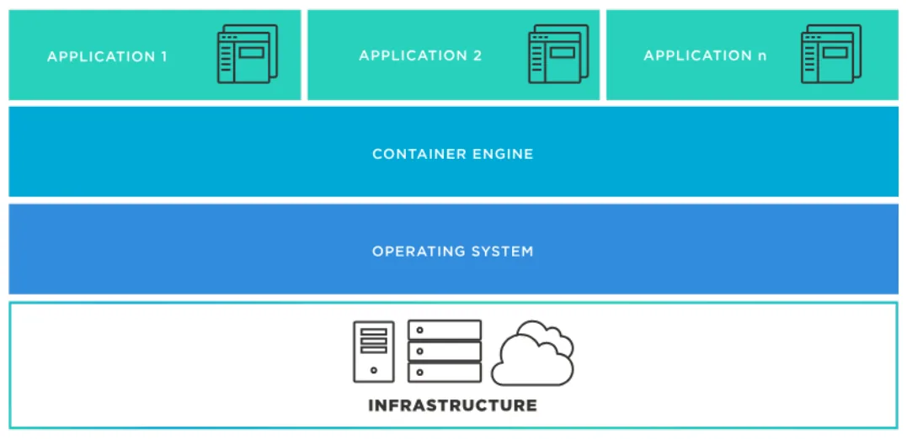
The architecture has four layers, bottom to top: the infrastructure (a laptop or a server), the host operating system, the container engine such as Docker Engine, and the containerized applications.
Benefits on the slide:
- Portability: build once, run anywhere. It ends "it works on my machine", because your machine's setup ships inside the container.
- Speed: no guest OS to boot.
- Isolation: each container has its own processes, network and file system view.
- Simpler operations: you manage standard containers, not hand-configured servers.
- Fast scaling: a traffic spike? Start more copies in seconds.
Process isolation is decades old. What changed things was Docker in 2013, which gave developers simple tools and one standard package format.
5.4 Compare the stacks
Run three apps on one machine
5.5 How a container is made
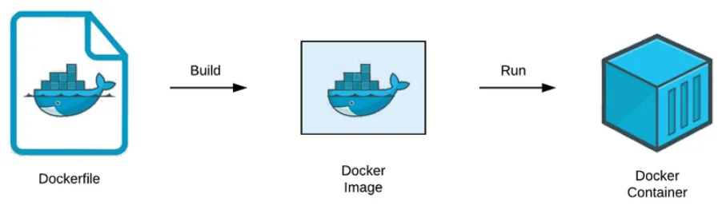
- Define the environment in a Dockerfile: base image, copy the code, install dependencies, the start command.
- Build an image: a read-only, layered package of the app and everything it needs.
docker build - Store it in a registry such as Docker Hub, AWS ECR, GCP Artifact Registry or Azure Container Registry.
docker push - Run it: the engine creates a container from the image.
docker run
Step 4 is where the isolation comes from. The engine asks the host's kernel for:
- Namespaces: give the container its own process list, network stack and file system view, so it believes it's alone on the machine. Inside, your app is process 1.
- Resource limits (Linux calls them cgroups): cap its CPU and memory so one container can't starve the rest.
Tool types: a container engine runs containers (Docker Engine), an image builder makes images (docker build), a registry stores them, and an orchestrator runs them at scale.
5.6 Orchestration
A company can run hundreds or thousands of containers. Nobody starts those by hand. A container orchestration platform does it: it schedules containers onto machines, restarts the ones that crash, balances traffic between copies, and scales the number of copies up and down.
Kubernetes is the standard. Google open-sourced it, based on its internal system Borg. It works with any engine that follows the Open Container Initiative (OCI) standards. Alternatives: Docker Swarm for small clusters, Apache Mesos, Nomad, and managed services such as Amazon ECS/EKS, Google GKE and Azure AKS.
Google ran containers long before Docker made them popular. In 2014 it said that everything at Google, Search and Gmail included, runs in containers, and that it starts over two billion of them a week. You can't do that by hand, so Borg did the scheduling. Kubernetes, announced the same year, is Google's attempt to give everyone else a Borg.
Chapter 5 recap
- Bare metal: OS on the hardware. Simple, but expensive and mostly idle.
- VM: a hypervisor splits one machine into many, each with a full guest OS.
- Type 1 hypervisors run on hardware, type 2 on an OS.
- Container: app plus libraries, sharing the host kernel. Light and fast.
- Dockerfile, build an image, push to a registry, run a container.
- Kubernetes orchestrates containers at scale.
Check yourself: Chapter 5
Docker
6.1 Architecture
Docker is a platform for building, shipping and running applications in containers. It uses a client-server design.
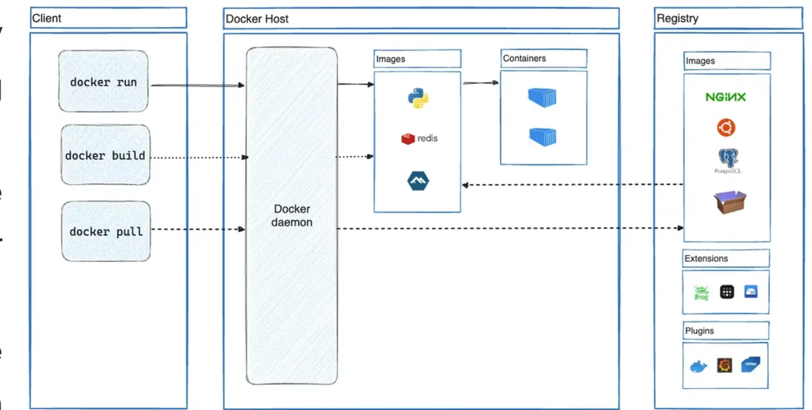
| Part | What it does |
|---|---|
Client (docker) | The command you type. It sends each command to the daemon. |
Daemon (dockerd) | Does the real work: builds images, runs containers, manages networks and volumes. |
| Registry | Stores images. Docker Hub is the default public one. |
| Image | A read-only template for a container. |
| Container | A running (or stopped) instance of an image. |
Client and daemon talk over a REST API, through a UNIX socket on the same machine or over the network, so your docker command can control a daemon on another server. Docker Compose is another client, for apps made of several containers, such as a web app plus its database.
6.2 Image vs container
The slide's own comparison: an image is a class, and a container is an object. You write the class once and create as many instances as you like. Each container has its own state, but they all start from the same read-only image.
An image holds everything the app needs: a base OS such as Ubuntu or Alpine, the code, the dependencies, and configuration like environment variables and the start command. A Dockerfile is the text file of instructions that builds it.
6.3 The Dockerfile
This is the Dockerfile on the slide, for a Node app:
FROM node:22-alpine WORKDIR /app COPY . . RUN yarn install --production CMD ["node", "./src/index.js"]
| Instruction | Meaning |
|---|---|
FROM node:22-alpine | Start from an image that already has Node 22 on Alpine Linux, a very small distribution. |
WORKDIR /app | Work in /app inside the image, creating it if needed. |
COPY . . | Copy the project folder from your machine into /app. |
RUN yarn install --production | Run a command at build time: install dependencies, without the dev-only ones. |
CMD [...] | The command to run when a container starts. It isn't run during the build. |
docker build -t my-app . # build an image called my-app from ./Dockerfile docker run -d -p 3000:3000 my-app # start a container, map port 3000 to the host
6.4 Layer caching
Each instruction makes one layer, and Docker reuses a layer from the last build if nothing it depends on has changed. Once one layer changes, every layer after it is rebuilt. So the order of the lines decides how fast your rebuilds are.
What gets rebuilt?
That's why most real Dockerfiles copy package.json and the lockfile first, install, and only then copy the rest of the code. You change your code all day, and your dependencies rarely.
6.5 Try the commands
The slides end with KodeKloud's free docker run lab. Here's a safe practice terminal with the same commands. Click a command, or type one.
A practice Docker terminal
KodeKloud · docker run
The real lab is at kodekloud.com/free-labs/docker/docker-run. It starts by asking how many containers are running on the host: that's docker ps, which only lists running ones. Add -a to see stopped containers too.
Chapter 6 recap
- The
dockerclient sends commands to thedockerddaemon over a REST API. - Image: read-only template. Container: a running instance of it.
RUNhappens at build time,CMDwhen the container starts.- One instruction, one layer. A change rebuilds that layer and everything after it.
- Copy dependency files and install before copying the code.
Check yourself: Chapter 6
Final Exam
A long paper on its own page, covering every chapter. No feedback until you hand it in, then a score per section and a full review.
Commands and Glossary
| Command | What it does |
|---|---|
git checkout -b feature/x | Create a branch and switch to it |
git add . && git commit -m "…" | Stage and commit changes |
git push -u origin feature/x | Push the branch and track it |
yarn install --immutable | Install exactly what yarn.lock says, or fail |
yarn lint / yarn test / yarn coverage | Lab 1's three checks |
docker build -t name . | Build an image from the Dockerfile in this folder |
docker run -d -p 8080:80 --name web img | Start a container in the background, host port 8080 to container port 80 |
docker ps / docker ps -a | Running containers / all containers |
docker images | Local images |
docker stop web / docker rm web | Stop a container / delete it |
docker pull img / docker push img | Download from / upload to a registry |
| Term | Meaning |
|---|---|
| CI | Merge often, and build and test every change automatically. |
| Continuous delivery / deployment | Auto-release to a repository and a person deploys / auto-deploy to production. |
| Pipeline / workflow | The automated sequence of steps. GitHub calls its file a workflow. |
| Shift left / right | Test earlier in development / keep validating in production. |
| Regression test | Checks that new changes didn't break existing features. |
| Smoke test | Quick check that the basics work before deeper testing. |
| Stub / driver | Fake lower module / fake higher module in integration testing. |
| Linter | Static analyser for mistakes and style. |
| Coverage | How much of the code ran during the tests. |
| Hypervisor | Software that runs virtual machines. Type 1 on hardware, type 2 on an OS. |
| Image / container | Read-only template / running instance of it. |
| Registry | Where images are stored, such as Docker Hub. |
| Namespace | Kernel feature that gives a container its own view of processes, network and files. |
| Orchestration | Scheduling, scaling and healing many containers automatically, as Kubernetes does. |
Course materials
The original files this page was built from. Tap one to download it.
Lecture decks
- Week 1 · Introduction to DevOps and DevOps in practice PDF · 11.8 MB
- Week 2 · Testing in DevOps PDF · 5.3 MB
- Week 4 · Containerization and Docker PDF · 1.5 MB
Lab
Built from the DevOps decks for Weeks 1, 2 and 4 and the Lab 1 handout (Chandara Chea, CADT). Figures are cropped from those slides, as credited under each one. The demos are simulations: nothing runs on GitHub or Docker. Facts in the "Real world" boxes are from general knowledge, not the slides, so check them before quoting them in an assignment.